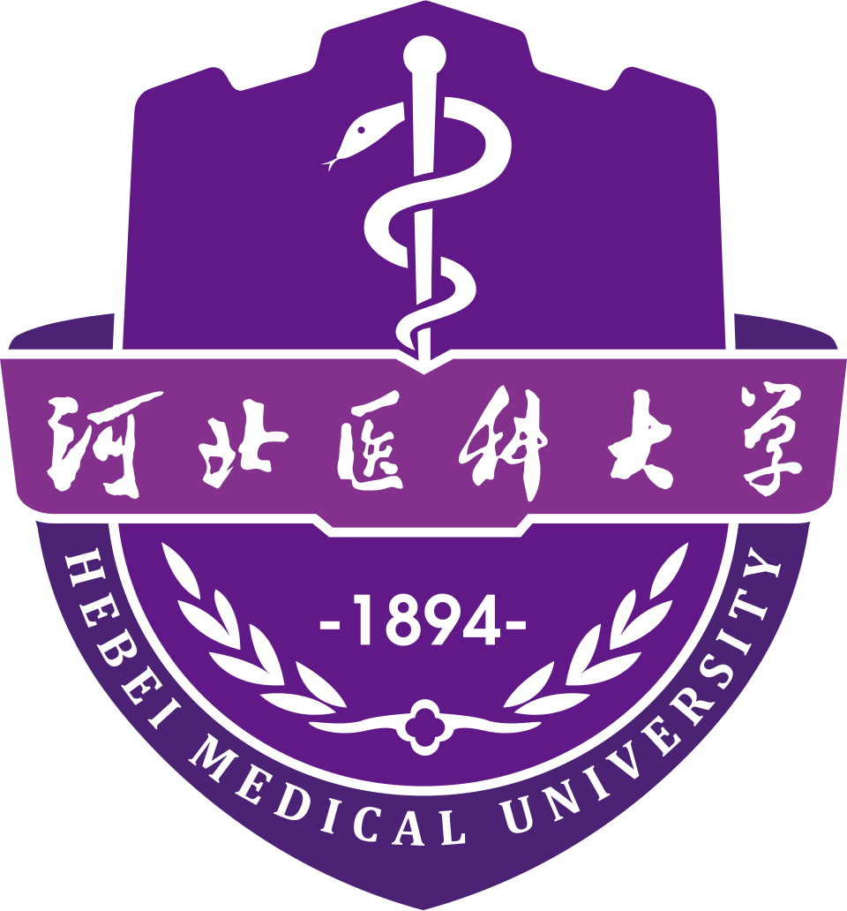

Proteomics
Advancing proteomics for precision medicine and drug discovery.
RESEARCH CONSOLE
NEWS
- 2026.02.05 Successfully defended Ph.D. dissertation at Kumamoto University.
DIA-MSMS Acquisition
TerminomicsProteolytic Data
CancerApplication
Pharmaceutics
DIA-MSMS Acquisition
TerminomicsProteolytic Data
Cancer
Pharmaceutics
RESEARCH: DIA
← Back to Console
RESEARCH: Terminomics
← Back to Console
RESEARCH: Cancer
← Back to Console
Pharmaceutics
ABOUT ME

// EDUCATION
2022 – 2026

2018 – 2021
PUBLICATIONS
Evaluation of the False Discovery Rate in Library-Free Search by DIA-NN Using In Vitro Human Proteome
Journal of Proteome Research (2025)
, Masanaga Kenko, Koji Ogawa, Naoki Goshima, Takeshi Masuda, Shingo Ito, Sumio Ohtsuki*.
// Impact: This study establishes a rigorous DIA FDR evaluation method by synthesizing recombinant proteins, providing a benchmark dataset for software optimization.
Improving Proteomic Identification Using Narrow Isolation Windows with Zeno SWATH Data-Independent Acquisition
Journal of Proteome Research (2024)
, Haruka Kumabe, Takumi Yamamoto, Naoto Tashiro, Takeshi Masuda, Shingo Ito, Sumio Ohtsuki*.
// Impact: The study developed an optimized narrow windows DIA that substantially boosts proteomic coverage and sensitivity (with a 40% improvement at low loading amounts) without compromising quantitative robustness.
OTHERS
// JOURNALS
// ANALYSIS & TOOLS
// RESEARCH RESOURCES
// LEARNING
// COMMUNITIES & MEDIA
CONTACT
Feel free to reach out for collaboration.
gukongxin [at] outlook.com231y2011 [at] st.kumamoto-u.ac.jp
PERSONAL DASHBOARD
...Total Visits
...Unique Visitors